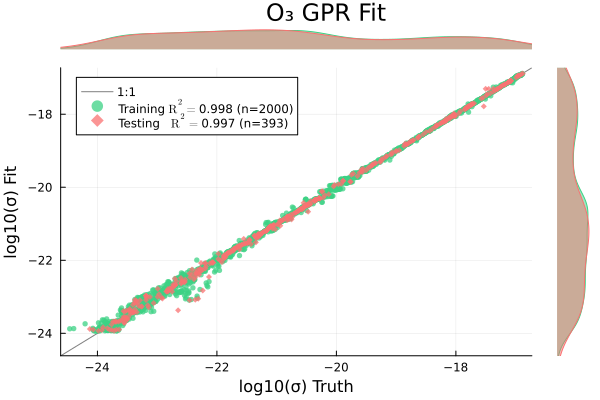
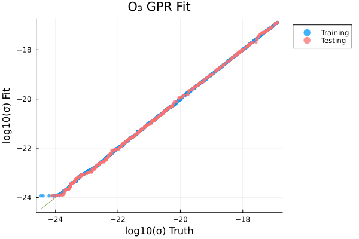
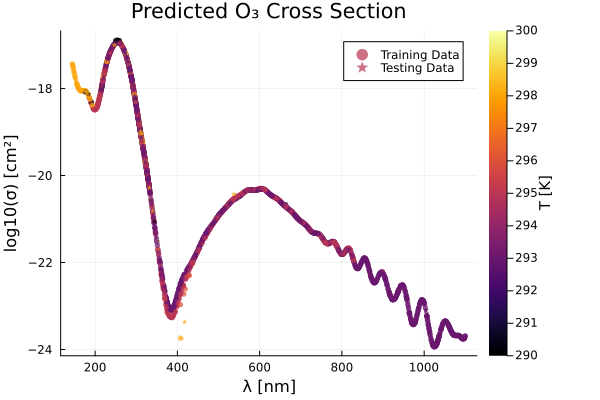
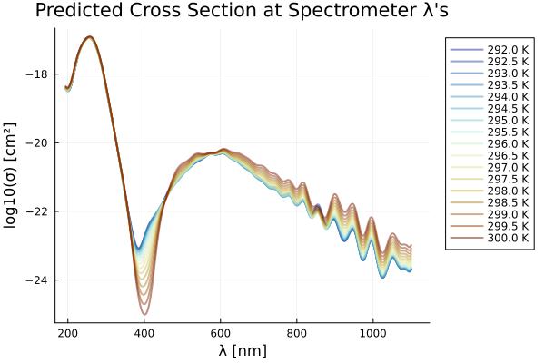
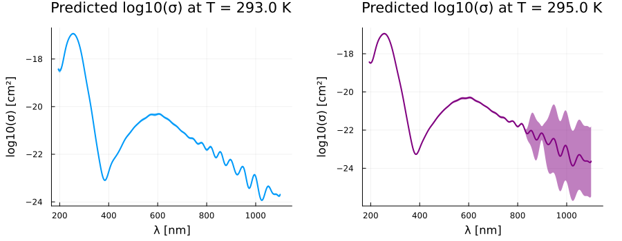

using Plots, MLPlotRecipes
using HDF5
using Tables, DataFrames, CSV
using MLJ, MLJGaussianProcesses
using StatsBase \(\mathrm{O_3}\)
include("./utils.jl")data_to_dfh5_path = "../../data/photolysis_data.h5"
species = "O3"
λs, σs, T1s, T2s, source_idx, T_units, category, formula, λ_units, σ_units = get_raw_data(h5_path, species)
# min_data_λ = minimum(λs)
# max_data_λ = maximum(λs)
println(min_data_λ)
println(max_data_λ)52.6
1100.0# load in spectrometer wavelengths
hr4000_df = CSV.File("../hr4000_wavelengths.txt") |> DataFrame ; println(nrow(hr4000_df))
println(maximum(hr4000_df.λ))
println(minimum(hr4000_df.λ))3648
1120.216
194.249Δλ = 50 # nm for padding
df = data_to_df(λs, σs, T1s, T2s, source_idx; λ_lb=minimum(hr4000_df.λ)-Δλ, λ_ub=maximum(hr4000_df.λ)+Δλ)
println(nrow(df))
describe(df)3662844×7 DataFrame
| Row | variable | mean | min | median | max | nmissing | eltype |
|---|---|---|---|---|---|---|---|
| Symbol | Float64 | Real | Float64 | Real | Int64 | DataType | |
| 1 | λ | 565.311 | 144.91 | 539.96 | 1100.0 | 0 | Float64 |
| 2 | σ | 9.07613e-19 | 3.4377e-25 | 8.0905e-22 | 1.41e-17 | 0 | Float64 |
| 3 | T | 293.791 | 290.0 | 293.0 | 300.0 | 0 | Float64 |
| 4 | source_id | 130.284 | 1 | 175.0 | 249 | 0 | Int64 |
nskip = 5
p2 = scatter(
df.λ[1:nskip:end],
log10.(df.σ[1:nskip:end]),
zcolor=df.T[1:nskip:end],
ms=3,
msw=0,
xlabel="λ [$(λ_units)]",
ylabel="log10(σ) [cm²]",
alpha=0.7,
rightmargin=10Plots.mm,
colorbar_title="T [$(T_units)]",
title="Absorption Cross Section for O₃",
label="",
)
savefig("O3_p2.png")
display(p2)
p1 = histogram(df.λ, xlabel="λ", ylabel="counts", label="", margin=10Plots.mm)
p2 = histogram(df.T, xlabel="T", label="", margin=10Plots.mm)
p3 = histogram(log10.(df.σ), xlabel="log10(σ)", label="", margin=10Plots.mm)
#p3 = histogram(df.σ, xlabel="σ", ylabel="counts")
phist = plot(p1, p2, p3, layout=(1,3), size=(1600, 450), plot_title="Data Distribution for O₃")
# load in spectrometer wavelengths
hr4000_df = CSV.File("../hr4000_wavelengths.txt") |> DataFrame ; println(nrow(hr4000_df))
println(maximum(hr4000_df.λ))
println(minimum(hr4000_df.λ))3648
1120.216
194.249It appears that GPR can not handle identical records with different target values, i.e. if \(x\_1 = [1.0, 2.0]\) and \(x\_2 = [1.0, 2.0]\), while \(y\_1 = 7.2\) and \(y_2 = 7.89\). To deal with this, let’s first group the dataframe by temperature, and average across identical wavelength values.
gdfs = groupby(df, :T)
res_dfs = []
for gdf ∈ gdfs
gdf_by_λ = groupby(gdf, :λ)
push!(res_dfs, combine(gdf_by_λ, [:σ, :T] .=> mean, renamecols = false))
end
df_unique = vcat(res_dfs...)191437×3 DataFrame
191412 rows omitted
| Row | λ | σ | T |
|---|---|---|---|
| Float64 | Float64 | Float64 | |
| 1 | 145.95 | 5.23e-18 | 298.0 |
| 2 | 148.1 | 4.47e-18 | 298.0 |
| 3 | 150.35 | 3.69e-18 | 298.0 |
| 4 | 152.65 | 2.93e-18 | 298.0 |
| 5 | 155.0 | 2.19e-18 | 298.0 |
| 6 | 157.45 | 1.63e-18 | 298.0 |
| 7 | 160.0 | 1.2e-18 | 298.0 |
| 8 | 162.6 | 9.77e-19 | 298.0 |
| 9 | 165.3 | 8.66e-19 | 298.0 |
| 10 | 168.1 | 8.14e-19 | 298.0 |
| 11 | 170.95 | 8.17e-19 | 298.0 |
| 12 | 173.15 | 8.57e-19 | 298.0 |
| 13 | 174.65 | 8.4e-19 | 298.0 |
| ⋮ | ⋮ | ⋮ | ⋮ |
| 191426 | 721.75 | 5.17e-22 | 290.0 |
| 191427 | 724.78 | 4.79e-22 | 290.0 |
| 191428 | 727.94 | 4.51e-22 | 290.0 |
| 191429 | 731.11 | 4.22e-22 | 290.0 |
| 191430 | 734.13 | 3.87e-22 | 290.0 |
| 191431 | 737.44 | 3.74e-22 | 290.0 |
| 191432 | 740.6 | 3.77e-22 | 290.0 |
| 191433 | 743.9 | 3.76e-22 | 290.0 |
| 191434 | 747.21 | 3.66e-22 | 290.0 |
| 191435 | 749.8 | 3.59e-22 | 290.0 |
| 191436 | 325.126 | 1.647e-20 | 294.09 |
| 191437 | 253.7 | 1.1365e-17 | 297.3 |
function representative_rand_sample(column::AbstractVector, nbins::Int, npoints::Int)
n_per_bin = floor(Int, npoints/nbins)
hist = fit(Histogram, column, nbins=nbins)
bin_edges = hist.edges[1]
idx_out = []
# loop over each bin
for i ∈ 1:size(bin_edges, 1)-1
bin_idxs = findall(ξ -> bin_edges[i] < ξ && ξ < bin_edges[i+1], column)
n_to_sample = minimum([n_per_bin, size(bin_idxs, 1)])
idx_res = sample(bin_idxs, n_to_sample, replace=false)
push!(idx_out, idx_res) # sample without replacement
end
return unique(vcat(idx_out...))
end
λ_idxs = representative_rand_sample(df_unique.λ, 1000, 1500)
σ_idxs = representative_rand_sample(log10.(df_unique.σ), 500, 2000)
idxs_res = shuffle(unique(vcat(λ_idxs, σ_idxs)))
df_sampled = df_unique[idxs_res, :]
max_data_λ = maximum(df_sampled.λ)
min_data_λ = minimum(df_sampled.λ)144.91p1 = histogram(df_sampled.λ, xlabel="λ", ylabel="counts", label="", margin=10Plots.mm)
p2 = histogram(df_sampled.T, xlabel="T", label="", margin=10Plots.mm)
p3 = histogram(log10.(df_sampled.σ), xlabel="log10(σ)", label="", margin=10Plots.mm)
#p3 = histogram(df.σ, xlabel="σ", ylabel="counts")
phist = plot(p1, p2, p3, layout=(1,3), size=(1600, 450), plot_title="Subsampled Data Distribution for O₃")
p = scatter(
df_sampled.λ,
log10.(df_sampled.σ),
zcolor=df_sampled.T,
ms=3,
msw=0,
xlabel="λ [$(λ_units)]",
ylabel="log10(σ) [cm²]",
alpha=0.7,
rightmargin=10Plots.mm,
colorbar_title="T [$(T_units)]",
title="Absorption Cross Section for O₃",
label="",
)
using KernelFunctions
using ParameterHandling
#kernel(θ) = θ.σ₁²*(SqExponentialKernel() ∘ ScaleTransform(1/(2(θ.ℓ₁)^2))) + θ.σ₂²*(Matern32Kernel() ∘ ScaleTransform(1/(2(θ.ℓ₂)^2)))
#θ_init = (;σ₁²=positive(0.1), ℓ₁=positive(0.1), σ₂²=positive(0.1), ℓ₂=positive(0.1),)
# gpr = GPR(
# k = kernel,
# θ_init = θ_init,
# σ²=1e-5
# )
# mach = machine(gpr, Xtrain, ytrain) |> fit!
ntrain = 2000
println(nrow(df_sampled))
Xtrain = df_sampled[1:ntrain, [:λ, :T]]
Xtest = df_sampled[ntrain+1:end, [:λ, :T]]
ytrain = log10.(df_sampled.σ[1:ntrain])
ytest = log10.(df_sampled.σ[ntrain+1:end])
#gpr = GPR(σ²=0.00001)
gpr = GPR(σ²=20.0)
#gpr = GPR(σ²=10.0)
mach = machine(gpr, Xtrain, ytrain) |> fit!2393[ Info: Training machine(GPR(μ = 0.0, …), …).Iter Function value Gradient norm
0 1.895553e+04 1.089245e+04
* time: 0.00023293495178222656
1 1.406705e+04 9.992374e+02
* time: 6.140300035476685
2 4.567351e+03 6.056796e+02
* time: 10.95110297203064
3 4.469610e+03 8.338185e+02
* time: 12.765144109725952
4 4.245273e+03 7.726211e+01
* time: 14.0292489528656
5 4.242124e+03 2.229819e+00
* time: 15.859333038330078
6 4.242119e+03 1.307826e+00
* time: 17.749542951583862
7 4.241513e+03 1.770765e+00
* time: 22.196347951889038
8 4.241457e+03 1.281473e+00
* time: 24.05824589729309
9 4.241454e+03 3.385108e-01
* time: 25.327658891677856
10 4.241453e+03 1.620705e-03
* time: 26.470855951309204
11 4.241453e+03 3.661842e-06
* time: 27.685795068740845
12 4.241453e+03 3.625067e-08
* time: 28.96527409553528
13 4.241453e+03 3.625067e-08
* time: 30.11615300178528
14 4.241453e+03 5.044836e-07
* time: 33.160128116607666
15 4.241453e+03 4.592814e-07
* time: 36.06552004814148
16 4.241453e+03 1.288944e-05
* time: 39.716432094573975
17 3.414179e+03 8.664837e+02
* time: 47.71522402763367
18 1.651360e+03 9.538045e+02
* time: 59.63056302070618
19 -4.874521e+01 1.064470e+03
* time: 63.3702929019928
20 -1.013460e+03 1.680301e+03
* time: 66.80359196662903
21 -1.415691e+03 1.108079e+03
* time: 69.31078290939331
22 -1.506751e+03 9.216041e+01
* time: 70.54564690589905
23 -1.517199e+03 2.711732e+02
* time: 72.39566493034363
24 -1.518241e+03 9.090404e+01
* time: 73.69105100631714
25 -1.522890e+03 6.955707e+01
* time: 75.61613702774048
26 -1.523535e+03 5.603726e+01
* time: 77.45700311660767
27 -1.525395e+03 1.443041e+02
* time: 79.85068798065186
28 -1.533531e+03 9.362427e+00
* time: 81.71036410331726
29 -1.533540e+03 6.371103e-01
* time: 83.01797795295715
30 -1.533540e+03 7.655377e-02
* time: 84.17978191375732
31 -1.533540e+03 2.382092e-04
* time: 85.41551899909973
32 -1.533540e+03 1.753667e-06
* time: 86.71504402160645
33 -1.533540e+03 7.746554e-06
* time: 87.8815279006958
34 -1.533540e+03 1.472901e-05
* time: 89.12229704856873
35 -1.533540e+03 1.066718e-05
* time: 90.42296504974365
36 -1.533540e+03 1.019341e-05
* time: 91.58784890174866
37 -1.533540e+03 8.570491e-06
* time: 93.43530201911926
38 -1.533540e+03 2.204922e-05
* time: 95.97738599777222
39 -1.533540e+03 6.240285e-06
* time: 97.83173894882202
40 -1.533540e+03 8.244155e-06
* time: 100.85972595214844
41 -1.533540e+03 7.644730e-06
* time: 102.71596503257751
42 -1.533540e+03 1.550915e-05
* time: 104.56649208068848
43 -1.533540e+03 1.391872e-06
* time: 106.42286205291748
44 -1.533540e+03 1.868966e-05
* time: 108.95626091957092
45 -1.533540e+03 5.423887e-06
* time: 112.6523790359497
46 -1.533540e+03 3.427944e-06
* time: 115.67456197738647
47 -1.533540e+03 4.984283e-06
* time: 116.91938900947571
48 -1.533540e+03 1.445121e-06
* time: 120.06368398666382
49 -1.533540e+03 1.440302e-05
* time: 121.24113893508911
50 -1.533540e+03 6.118093e-06
* time: 122.48774790763855
51 -1.533540e+03 4.987398e-06
* time: 124.95883297920227
52 -1.533540e+03 1.442610e-05
* time: 126.81077599525452
53 -1.533540e+03 2.678575e-06
* time: 128.05449891090393
54 -1.533540e+03 8.223159e-06
* time: 129.35095500946045
55 -1.533540e+03 2.647081e-06
* time: 131.21228694915771
56 -1.533540e+03 3.819886e-06
* time: 132.39116096496582
57 -1.533540e+03 1.346252e-05
* time: 133.63503694534302
58 -1.533540e+03 1.143560e-05
* time: 134.9405119419098
59 -1.533540e+03 2.393362e-06
* time: 136.1145269870758
60 -1.533540e+03 2.176112e-06
* time: 137.35962295532227
61 -1.533540e+03 2.222200e-05
* time: 138.66111707687378
62 -1.533540e+03 3.515423e-06
* time: 140.52360892295837
63 -1.533540e+03 3.045656e-06
* time: 142.94494700431824
64 -1.533540e+03 3.162883e-06
* time: 144.24246311187744
65 -1.533540e+03 9.618175e-06
* time: 148.54484295845032
66 -1.533540e+03 2.178909e-06
* time: 149.87509393692017
67 -1.533540e+03 1.006483e-05
* time: 151.76223397254944
68 -1.533540e+03 2.983203e-05
* time: 152.966490983963
69 -1.533540e+03 3.207124e-07
* time: 155.0663080215454
70 -1.533540e+03 3.545164e-06
* time: 157.8845341205597
71 -1.533540e+03 8.466625e-06
* time: 162.851322889328
72 -1.533540e+03 1.556414e-05
* time: 166.0120599269867
73 -1.533540e+03 8.336790e-06
* time: 168.51971411705017
74 -1.533540e+03 2.440844e-06
* time: 170.40829992294312
75 -1.533540e+03 2.187293e-06
* time: 174.146635055542
76 -1.533540e+03 1.490890e-05
* time: 176.65196204185486
77 -1.533540e+03 1.347374e-05
* time: 177.89833688735962
78 -1.533540e+03 5.661547e-06
* time: 179.75523805618286
79 -1.533540e+03 1.249644e-06
* time: 182.92224788665771
80 -1.533540e+03 2.687863e-06
* time: 184.10883593559265
81 -1.533540e+03 5.057053e-06
* time: 186.65520596504211
82 -1.533540e+03 1.905025e-05
* time: 190.37822794914246
83 -1.533540e+03 8.840852e-06
* time: 191.55318689346313
84 -1.533540e+03 5.277631e-06
* time: 192.80143308639526
85 -1.533540e+03 2.502191e-06
* time: 198.37488794326782
86 -1.533540e+03 1.728454e-05
* time: 200.85107588768005
87 -1.533540e+03 3.606126e-06
* time: 202.7210590839386
88 -1.533540e+03 2.414654e-06
* time: 207.14464712142944
89 -1.533540e+03 1.809437e-05
* time: 209.00769305229187
90 -1.533540e+03 2.772308e-05
* time: 210.18833804130554
91 -1.533540e+03 1.179537e-05
* time: 211.4408938884735
92 -1.533540e+03 7.105691e-06
* time: 222.04957699775696
93 -1.533540e+03 3.302692e-06
* time: 228.95177292823792
94 -1.533540e+03 3.082197e-05
* time: 232.06919407844543
95 -1.533540e+03 2.105031e-06
* time: 233.94339799880981
96 -1.533540e+03 7.874715e-06
* time: 238.99285697937012
97 -1.533540e+03 2.365513e-05
* time: 240.17577600479126
98 -1.533540e+03 1.236971e-05
* time: 242.04634499549866
99 -1.533540e+03 1.931916e-05
* time: 243.2959589958191
100 -1.533540e+03 3.662537e-06
* time: 244.60285806655884
101 -1.533540e+03 6.966768e-06
* time: 247.65188097953796
102 -1.533540e+03 3.790492e-06
* time: 249.54217290878296
103 -1.533540e+03 2.897680e-06
* time: 253.9816451072693
104 -1.533540e+03 1.465158e-06
* time: 255.16754388809204
105 -1.533540e+03 3.644674e-06
* time: 257.04450511932373
106 -1.533540e+03 3.344767e-06
* time: 258.29898405075073
107 -1.533540e+03 8.308128e-06
* time: 260.17109203338623
108 -1.533540e+03 2.794808e-06
* time: 261.471883058548
109 -1.533540e+03 1.136085e-05
* time: 264.53187894821167
110 -1.533540e+03 3.536829e-06
* time: 266.4042649269104
111 -1.533540e+03 1.706470e-06
* time: 269.520663022995
112 -1.533540e+03 8.826193e-06
* time: 278.7775149345398
113 -1.533540e+03 1.630664e-05
* time: 279.96838998794556
114 -1.533540e+03 2.489560e-06
* time: 282.52755904197693
115 -1.533540e+03 6.312682e-06
* time: 288.7180609703064
116 -1.533540e+03 6.415873e-06
* time: 290.0321340560913
117 -1.533540e+03 2.771751e-06
* time: 291.2184340953827
118 -1.533540e+03 1.130116e-05
* time: 294.79445600509644
119 -1.533540e+03 1.917978e-05
* time: 296.5161180496216
120 -1.533540e+03 3.843873e-06
* time: 298.3857989311218
121 -1.533540e+03 1.693866e-06
* time: 300.26083302497864
122 -1.533540e+03 5.027529e-06
* time: 301.44578409194946
123 -1.533540e+03 8.445519e-07
* time: 308.30259799957275
124 -1.533540e+03 2.556163e-06
* time: 310.7890820503235
125 -1.533540e+03 5.223119e-07
* time: 315.26314210891724
126 -1.533540e+03 8.266791e-06
* time: 319.0356569290161
127 -1.533540e+03 6.386287e-06
* time: 320.2140951156616
128 -1.533540e+03 1.412270e-05
* time: 322.08297300338745
129 -1.533540e+03 2.078138e-06
* time: 324.6624948978424
130 -1.533540e+03 1.012126e-05
* time: 327.71558809280396
131 -1.533540e+03 1.045028e-05
* time: 330.2763919830322
132 -1.533540e+03 9.795864e-06
* time: 331.460932970047
133 -1.533540e+03 1.461121e-05
* time: 333.32890009880066
134 -1.533540e+03 1.791812e-05
* time: 335.20457005500793
135 -1.533540e+03 2.345687e-06
* time: 337.77415895462036
136 -1.533540e+03 1.431252e-06
* time: 339.6459059715271
137 -1.533540e+03 2.046189e-06
* time: 340.8323209285736
138 -1.533540e+03 6.755494e-06
* time: 342.7040948867798
139 -1.533540e+03 2.554544e-06
* time: 345.8324410915375
140 -1.533540e+03 2.861181e-06
* time: 348.3192799091339
141 -1.533540e+03 1.396894e-05
* time: 351.4504508972168
142 -1.533540e+03 2.378853e-05
* time: 352.76230812072754
143 -1.533540e+03 1.346429e-06
* time: 355.20848989486694
144 -1.533540e+03 1.070886e-05
* time: 356.58474111557007
145 -1.533540e+03 3.877327e-06
* time: 357.80172300338745
146 -1.533540e+03 9.503755e-06
* time: 359.6752688884735
147 -1.533540e+03 1.516390e-06
* time: 360.9410619735718
148 -1.533540e+03 5.855738e-06
* time: 362.8295578956604
149 -1.533540e+03 5.546748e-06
* time: 364.7039909362793
150 -1.533540e+03 1.999668e-05
* time: 367.1932940483093
151 -1.533540e+03 3.843044e-06
* time: 368.4517409801483
152 -1.533540e+03 1.410995e-05
* time: 370.32276701927185
153 -1.533540e+03 1.162339e-05
* time: 372.8172769546509
154 -1.533540e+03 2.170200e-05
* time: 374.6886260509491
155 -1.533540e+03 5.655190e-06
* time: 375.94295597076416
156 -1.533540e+03 4.168199e-06
* time: 379.1218149662018
157 -1.533540e+03 1.536527e-05
* time: 380.30632495880127
158 -1.533540e+03 8.405467e-06
* time: 382.1797618865967
159 -1.533540e+03 7.537775e-06
* time: 385.32015895843506
160 -1.533540e+03 9.623807e-06
* time: 386.63003301620483
161 -1.533540e+03 8.451022e-06
* time: 388.5044240951538
162 -1.533540e+03 7.389888e-06
* time: 389.6882150173187
163 -1.533540e+03 1.461439e-05
* time: 392.81087589263916
164 -1.533540e+03 3.120161e-07
* time: 398.80148696899414
165 -1.533540e+03 9.302807e-06
* time: 402.04468607902527
166 -1.533540e+03 3.130547e-06
* time: 403.2521049976349
167 -1.533540e+03 1.157865e-06
* time: 406.44039511680603
168 -1.533540e+03 9.355850e-06
* time: 408.98000597953796
169 -1.533540e+03 1.180098e-06
* time: 410.2621750831604
170 -1.533540e+03 1.540223e-05
* time: 414.9081039428711
171 -1.533540e+03 1.879087e-06
* time: 416.53381609916687
172 -1.533540e+03 6.096513e-06
* time: 417.90542697906494
173 -1.533540e+03 1.157796e-05
* time: 419.11603689193726
174 -1.533540e+03 7.202413e-06
* time: 420.395467042923
175 -1.533540e+03 1.012719e-05
* time: 425.79697489738464
176 -1.533540e+03 8.305032e-06
* time: 427.7671709060669
177 -1.533540e+03 7.861186e-07
* time: 429.68268394470215
178 -1.533540e+03 1.538960e-05
* time: 432.79700803756714
179 -1.533540e+03 1.884246e-06
* time: 435.4114079475403trained Machine; caches model-specific representations of data
model: GPR(μ = 0.0, …)
args:
1: Source @834 ⏎ Table{AbstractVector{Continuous}}
2: Source @707 ⏎ AbstractVector{Continuous}y_pred_train = predict_mean(mach, Xtrain);
y_pred_test = predict_mean(mach, Xtest);now let’s collect some more points in order to evaluate our model using indices other than the ones used during training.
p = scatterresult(
ytrain, y_pred_train,
ytest, y_pred_test,
xlabel="log10(σ) Truth",
ylabel="log10(σ) Fit",
plot_title="O₃ GPR Fit"
)
savefig("O3_scatter.png")
savefig("O3_scatter.pdf")
display(p)┌ Warning: Keyword argument `orientation` is deprecated.
│ Please use `permute` instead.
└ @ Plots ~/.julia/packages/Plots/QZRtR/src/args.jl:1548
p = quantilequantile(
ytrain, y_pred_train,
ytest, y_pred_test,
xlabel="log10(σ) Truth",
ylabel="log10(σ) Fit",
title="O₃ GPR Fit"
)
savefig("O3_quantile.png")
savefig("O3_quantile.pdf")
display(p)
p1 = scatter(
Xtrain.λ,
y_pred_train,
zcolor=Xtrain.T,
ms=3,
msw=0,
xlabel="λ [$(λ_units)]",
ylabel="log10(σ) [cm²]",
alpha=0.7,
rightmargin=10Plots.mm,
colorbar_title="T [$(T_units)]",
label="Training Data",
)
scatter!(
Xtest.λ,
y_pred_test,
zcolor=Xtest.T,
ms=3,
msw=0,
# markershape=:rect,
markershape=:star5,
xlabel="λ [$(λ_units)]",
ylabel="log10(σ) [cm²]",
alpha=0.7,
rightmargin=10Plots.mm,
colorbar_title="T [$(T_units)]",
title="Predicted O₃ Cross Section",
label="Testing Data",
)
savefig("predicted_O3_data.png")
savefig("predicted_O3_data.pdf")
display(p1)
Finally, let’s try prediction at the desired wavelength bins:
λ_min = maximum([min_data_λ, minimum(hr4000_df.λ)])
λ_max = minimum([max_data_λ, maximum(hr4000_df.λ)])
println(λ_min)
println(λ_max)
function predict_logσ(T, λs, mach, λ_bounds)
λ_lb, λ_ub = λ_bounds
Xout = copy(λs)
Tout = T
Xout[!, :T] = [Tout for _ ∈ 1:nrow(λs)]
res = predict_mean(mach, Xout)
idxs = [idx for idx ∈ 1:nrow(Xout) if (Xout.λ[idx] ≤ λ_lb) || (λ_ub ≤ Xout.λ[idx])]
res[idxs] .= NaN
return res
end
p = plot()
Ts = 292.0:0.5:300.0
# cs = cgrad(:thermal, Ts, categorical = true)
cs = cgrad(:roma, size(Ts,1), categorical = true, rev=true)
i = 1
for T ∈ Ts
logσ = predict_logσ(T, hr4000_df, mach, (λ_min, λ_max))
plot!(
hr4000_df.λ, logσ,
linewidth=2,
alpha=0.5,
color=cs[i],
label="$(T) K",
legend=:outertopright,
)
i+=1
end
xlabel!("λ [nm]")
ylabel!("log10(σ) [cm²]")
title!("Predicted Cross Section at Spectrometer λ's")
savefig("O3_σ_vs_T.png")
savefig("O3_σ_vs_T.pdf")
display(p)194.249
1099.64
function predict_logσ_wΔ(T, λs, mach, λ_bounds)
λ_lb, λ_ub = λ_bounds
Xout = copy(λs)
Tout = T
Xout[!, :T] = [Tout for _ ∈ 1:nrow(λs)]
res = MLJ.predict(mach, Xout)
logσ = mean.(res)
Δlogσ = std.(res)
idxs = [idx for idx ∈ 1:nrow(Xout) if (Xout.λ[idx] ≤ λ_lb) || (λ_ub ≤ Xout.λ[idx])]
logσ[idxs] .= NaN
Δlogσ[idxs] .= NaN
return logσ, Δlogσ
#return res
end
Tplot = 293.0
logσ, Δlogσ = predict_logσ_wΔ(Tplot, hr4000_df, mach, (λ_min, λ_max))
p1 = plot(
hr4000_df.λ, logσ,
ribbon= 2 .* Δlogσ,
fillalpha=0.5,
linewidth=2,
xlabel="λ [nm]",
ylabel="log10(σ) [cm²]",
title="Predicted log10(σ) at T = $(Tplot) K",
label="",
)
Tplot = 295.0
logσ, Δlogσ = predict_logσ_wΔ(Tplot, hr4000_df, mach, (λ_min, λ_max))
p2 = plot(
hr4000_df.λ, logσ,
ribbon= 2 .* Δlogσ,
fillalpha=0.5,
linewidth=2,
color=:purple,
xlabel="λ [nm]",
ylabel="log10(σ) [cm²]",
title="Predicted log10(σ) at T = $(Tplot) K",
label=""
)
plot(p1, p2, layout=(1,2), margin=5Plots.mm, size=(900,350)) 